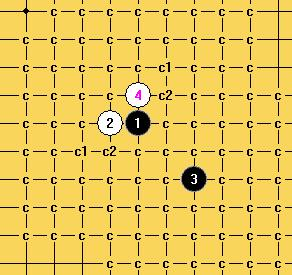

发个图就是专利了
发个图就是专利了这是一份完整的全地毯谱，不是毛巾谱。我甚至有斜月二打必胜的毛巾谱。。。当然啦，小小的错误是肯定有的（鄙视自己）
其他闲杂人等再要蹦出来宣布是他地毯的，嘿嘿，那就不好意思了，该专利已经申请完成。私下偷偷自己地毯的，不予承认，嘿嘿。

谱暂时不能放出来，因为作者暂未同意。
传统白4已经被送入了历史的回收站。
［ 岳麓小棋后 于 2009-4-29 22:32:08 时花20金币送鲜花一朵］
［ nara 于 2009-4-29 22:46:37 时花20金币送鲜花一朵］
［ 失落刀 于 2009-4-29 23:26:31 时花20金币送鲜花一朵］
其实对于很多拆棋手来说，游星价值不大，一般被排在比较靠后的位置拆，上次论坛发这个4手的时候我也想拆过，但是还是放下了，因为还有更重要的东西要拆，所以这个白4一直来没被发现也很正常，个人看法。
传统白4已经证明无法一打必胜，怎么证明的？拆游星的人少呀。。。
我还有疏星一打必胜的毛巾谱，你要不要呀？
过来支持楼主的，有好东东记得分享下！
发个图就是专利了
论坛里的是毛巾谱，雪月你别搞错了。流大师，有的东西你也明白，几个人知道是这么一回事就可以了。无敌不也好多变化必胜必败就一句话的事情，也没看见发谱吧？理解理解就好了
 支持地毯，就是太占空间
支持地毯，就是太占空间 随没地毯过,但跟别人拆过,确实白4感觉优势太大,后不作为研究了.
随没地毯过,但跟别人拆过,确实白4感觉优势太大,后不作为研究了. 难道那斜二是我拆给逆刀胸的13?那几个关键手我都截图给他看了.整条主线很简单...我做好自杀准备了...上次那疏10也是..结果变成你的谱了..虽然是天羽MM拆出但他没公布..我拆完给了逆刀..
难道那斜二是我拆给逆刀胸的13?那几个关键手我都截图给他看了.整条主线很简单...我做好自杀准备了...上次那疏10也是..结果变成你的谱了..虽然是天羽MM拆出但他没公布..我拆完给了逆刀..我觉得这是一个好风气……有料就说出来，但也不一定要真的放谱出来，谁有能力要到自然就要到。
少了些纷争总是好事。
对于不知大师的言论，我有几句话要说：
1.我说斜二必胜只是一句玩笑话，谁都知道斜一尚且没有必胜，“毛巾谱”三个字就说明了我这话并不严谨，而我说话向来很严谨。反而对于你仅凭我一句玩笑话，就认定我剽窃了你的研究（你说的13我压根不知道是哪个，斜二有两条路线，你知道我说的是哪条路线？），这种精神和南朝鲜的某些民族风气有点相似。
2.所谓的疏10就更不知所谓了，我向来对疏星不感兴趣，至今只做过一个少帅流10的研究。其中的一路强防是根据论坛很多人对于今年QQ家族公开赛的一局棋的分析做出来的地毯，一路是我和裁决殿红的拆解做出来的，还有一路是逆刃兄帮忙拆解的，逆刃兄拆解的一路我并没有放出来，去掉了。不知道这件事你还有何疑问？当然，最早的强17手确实是天羽做出来的，但是我和他并不熟悉，甚至压根不认识，他肯定不会给我谱的。至于之后我根据公开比赛的棋谱和大家的讨论做出来的地毯，虽然是山寨版的，但也不至于说是剽窃吧？
3.我听过天羽大师两次语音教学，首先，我和天羽大师并不熟悉，没有见过面，但是听声音，他似乎是男士，你说的“天羽MM”到底是哪位，我还真不知道，可否介绍给我认识一下？
4.逆刃兄是一位非常热心的版主，同时也是非常让人放心的朋友。他说话做事都很负责任，别人的研究从来不随便散布出去。所以他虽然很热心帮助我拆解了很多局面，但是从来没有给过我谁的研究谱。至今为止，给过我研究谱的只有天涯独行客一人，给过我公开谱的只有吉坦和小刀。裁决殿红、茗弈空龙帮助我进行过QQ拆解。他们的帮助，我从来都没有隐瞒，而把成果据为己有。至于说其他人的研究，我想我也根本拿不到，除非是公开到论坛的。
不知大师还有什么意见没有？还是说你的想象力太丰富了一点？
同时，顶屏蔽同学对我的支持。有料就说出来，但是不一定要放谱，这话是对的。就和斜三反防9必败一样，也没见无敌大师放谱出来，但是他热心地给出了强点的拆解，这就够了。大家对游星强点不懂的，完全可以来论坛讨论，我知无不言，言无不尽。
这两天没有上QQ,我想不知兄弟误解了,斜月二打那个13我根本杀不掉,你的路线也最多做到黑优,我不最多WDL1988所说的斜月二打是怎么杀的,他研究得比较多.上次的那个疏星是我和他各研究了一路.就不要为此事争执了.
 那是我误解了不好意思.居然成了吵架帖
那是我误解了不好意思.居然成了吵架帖……说到底你还是没拿出来，我比较感谢第一个公布的人，不然说句完成有什么用……